AI Academy · Level 3 · Grade 8 · Week 8 · Student lesson
Structured Output and Schemas
Learn to understand, design, build, test and explain AI systems responsibly.
Project: Verified Study Buddy
Before you start
AI-2 Week 7: text and numeric values are different types.
Plan time to read, investigate and explain. Keep predictions separate from observations.
Student lesson · 1 of 17
Your mission
Your learning target
I can separate JSON parsing, schema validation and source support checks.
I can reject invalid types and unexpected fields under a closed schema.
I can trace a validly formatted but unsupported claim.
Remember before reading
Close your notes first. A rough first answer helps us choose the right starting point; it is not a score for your ability.
Without opening the old lesson, explain one key idea from Iterative Prompting. Give an example and a mistake that the idea helps you avoid.
Without opening the old lesson, explain one key idea from Prompt as a Contract. Give an example and a mistake that the idea helps you avoid.
Without opening the old lesson, explain one key idea from A Distribution of Possibilities. Give an example and a mistake that the idea helps you avoid.
After trying, check the relevant lesson or ask your teacher. Change the part of your explanation that the evidence shows was wrong.
Week 8: Structured Output and Schemas
Schemas make output easier to validate, reuse, and test.
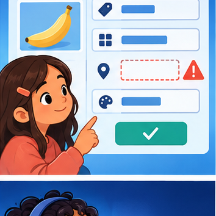
CREATOR MISSION
Request fields, then check missing and invalid values.
Creator name and date:
Readiness for the connected explanation
Does a requested output format prove a response followed the specification?
This week’s end goal
By the end, I can validate structured output in layers: syntax, schema and source meaning.
Student lesson · 2 of 17
Notice the evidence
PICTURE STORY
Notice → Predict → Explain
Begin with visible evidence. Do not explain more than the picture and information support.
MYSTERY
The learners must use structured output and schemas to solve a problem. What information do they have? What decision or calculation do they make? What would count as evidence that it worked?
Three observations (what you can point to):
My prediction and the clue supporting it:
A closer explanation
A response may be valid JSON and still violate the schema or sources. First parse the text. Then check the exact object fields and types. Finally check source support and domain meaning. These checks answer different questions. Do not call a successful parser a complete validator.
Use the Week 11 closed object: exactly status,room,capacity,source_ids. status is supported or needs_review. source_ids is a list of distinct known source-ID strings. For supported, room is a nonempty string and capacity a nonnegative integer. For needs_review, room and capacity are null. Boolean values are not capacities under this contract.
Student lesson · 3 of 17
See how it works
VISUAL MECHANISM
Input → Process → Output
Trace the information. At each stage, ask what changed and how you could test it.
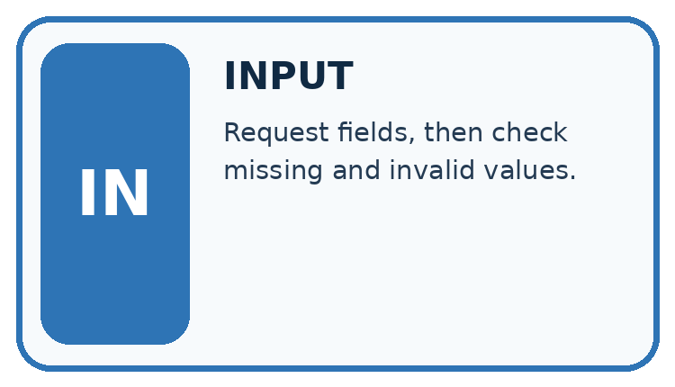
↓
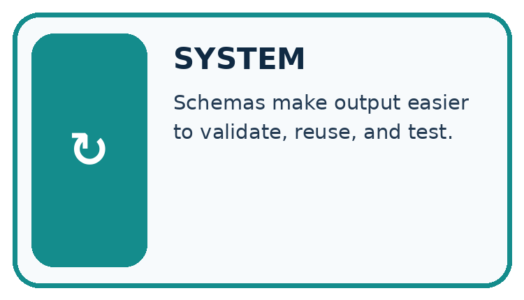
↓
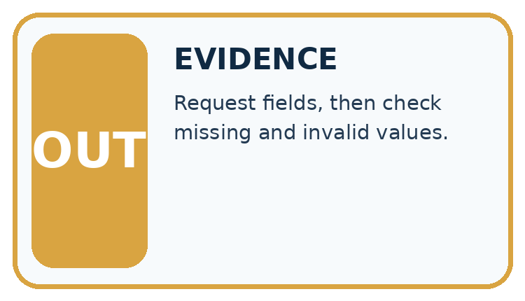
Which stage could fail even when the other two are correct? Explain:
A closer explanation
| Response fragment | Layer that rejects it | Reason |
|---|---|---|
| {status: supported} | Syntax | JSON keys/strings need quotes |
| {"capacity":"12"} | Schema in a complete object | String does not satisfy integer capacity |
| {"capacity":true} | Schema in a complete object | Boolean is not accepted as an integer |
| An extra booking field | Closed schema | Unexpected field |
These fragments illustrate failures, not complete candidate objects. A real check receives the whole object and verifies every required field. Do not repair a string capacity automatically unless a separate documented conversion policy permits it; otherwise report validation failure. A null value differs from missing a field.
Keep the evidence roles separate
Connect the picture and the explanation
Point to the input, the deciding step and the result in this week’s visual. Explain the same step in ordinary words. A picture helps when you can say what each part represents.
Student lesson · 4 of 17
Compare the cases
CASE GALLERY
Four Tests, Four Kinds of Evidence
A system is not understood until it survives more than one comfortable example.


NORMAL CASE: predict and name evidence. BOUNDARY CASE: predict and name evidence.


MISSING INFORMATION: predict and name evidence. TRANSFER CASE: predict and name evidence.
Which case is most likely to reveal a hidden assumption? Why?
Change one thing in the pictured case
Change: Add an extra field "rating":5 to X under the exactly-fields schema.
Prediction: The changed object fails schema despite keeping the correct page count.
Reason: Exactly means additional fields are not allowed in this contract.
Student lesson · 5 of 17
Words that unlock the idea
VOCABULARY LAB
Words You Can Use to Reason
A definition matters when you can recognize the idea, use it, and contrast it with a near-miss.
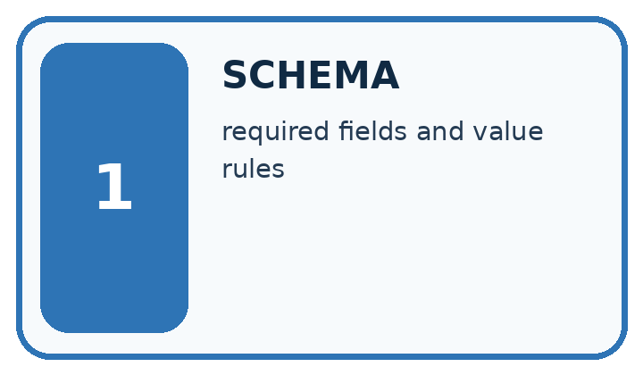
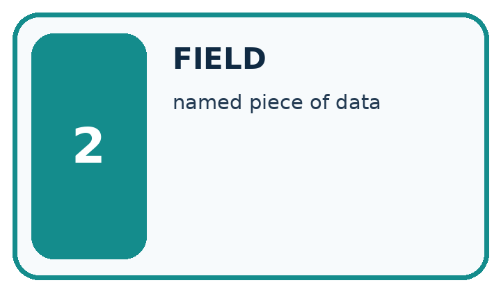
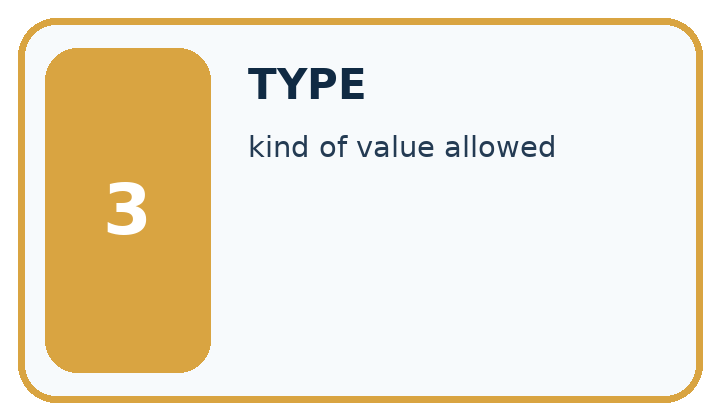
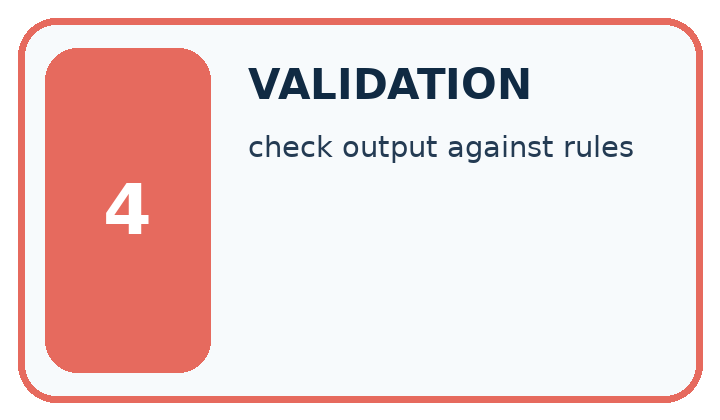
| Word | My own example | Not this / boundary |
|---|---|---|
| schema | A specification of required fields, types and structural rules for data. | |
| field | A named item of information in a record or structured message. | |
| type | The category of a value, such as text, number or Boolean. | |
| validation | Checking data or behaviour against rules; in ML, validation data is used to choose settings or models, separately from final testing. |
Words used in the closer explanation
| Word | Meaning |
|---|---|
| Syntax validation | Checking whether text can be parsed under the format grammar |
| Schema validation | Checking fields, types and allowed combinations in a parsed value |
| Semantic validation | Checking meaning and consistency with sources or domain rules |
| Closed schema | A contract rejecting fields beyond the stated set |
Student lesson · 6 of 17
Follow a worked example
WORKED EVIDENCE
Reason Step by Step
Predict first. Then check each step. A correct answer without visible reasoning is incomplete evidence.
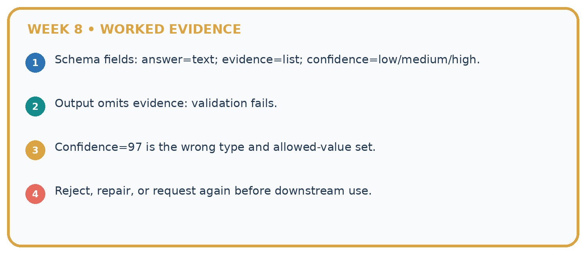
1. Schema fields: answer=text; evidence=list; confidence=low/medium/high.
2. Output omits evidence: validation fails.
3. Confidence=97 is the wrong type and allowed-value set.
4. Reject, repair, or request again before downstream use.
Recalculate, retrace, or restate the reasoning in your own representation:
CHECK Did the evidence answer the exact question? Did the total, path, or source record stay consistent?
A closer explanation
Suppose sources P and Q approve room B and give capacity 12. The complete object {"status":"supported","room":"B","capacity":99,"source_ids":["P","Q"]} parses and satisfies the stated field types, but its capacity is unsupported by Q. Reject it at semantic validation. Listing a real source ID does not prove that source supports the associated claim.
An object with needs_review and room B violates the conditional schema rule even if its source IDs are real. An object with supported, room B and capacity 12 but source ID Z fails the known-source rule. Require the linked current approval and capacity records to support the same room.
Learn from the worked case
Cover the result before checking it. Say what is given, choose the procedure, and follow one step at a time. Then uncover the result and explain your first mismatch. Ask why a step is allowed, not only what number it produces.
A pictorial worked case: Structured Output and Schemas
A fictional Study Buddy returns a machine-readable book fact.
The facts we will use
Schema: exactly title text, pages integer, source_id text. Approved record R: River Notes, 64 pages.
X={"title":"River Notes","pages":64,"source_id":"R"}; Y uses pages:"64"; Z uses pages:46 with otherwise identical fields.
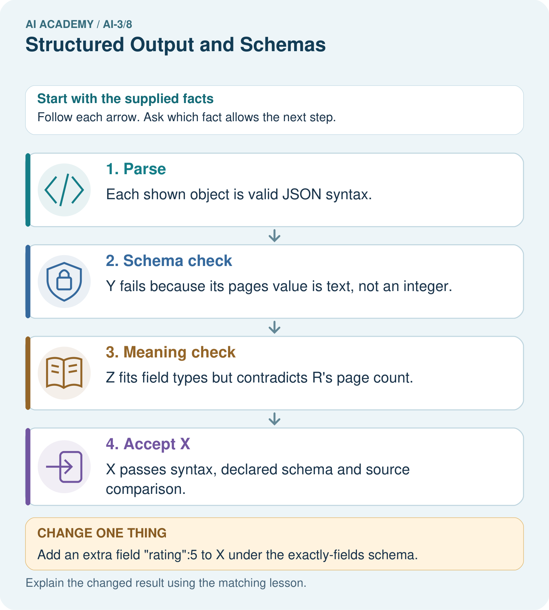
Read the picture one step at a time
Why this result follows
Parsing establishes that text forms a structured object. Schema checks establish required fields and types. Semantic validation compares their meaning with the approved source. These are different layers: a parseable, well-shaped object can still contain a false fact. Report the first failing layer without treating format success as factual success.
What this example does not establish
Source agreement does not establish that the approved catalogue itself is correct or complete.
Read the labelled picture: Which object demonstrates that valid JSON and valid types are insufficient for truth?
Change one thing: Add an extra field "rating":5 to X under the exactly-fields schema. Predict the result before checking the explanation. What remains the same?
Student lesson · 7 of 17
Find and repair a mistake
ERROR DETECTIVE
Compare → Diagnose → Repair
Do not patch the answer. Find the earliest unsupported assumption, wrong step, or weak evidence.
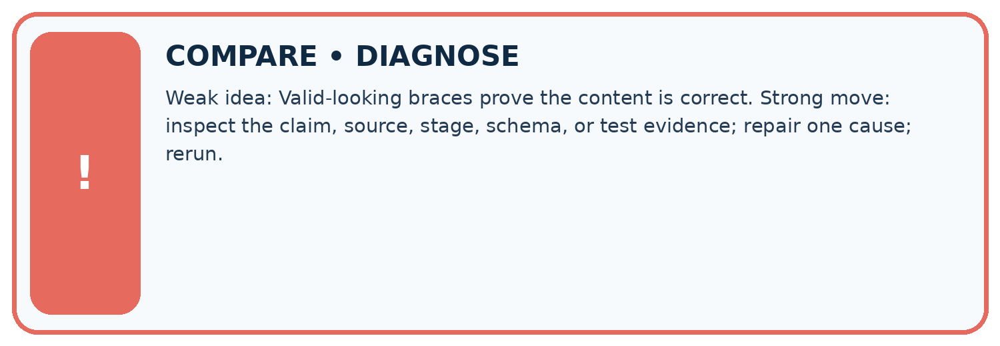
| Evidence record | Expected | Actual | Likely cause / next test |
|---|---|---|---|
| normal case | works | ||
| boundary case | stated rule | ||
| missing input | safe response | ||
| fresh transfer | generalizes |
Repair one cause. Why is this repair better than changing several things?
A closer explanation
Keep validation outcomes and the original generated text for fictional debugging data. Report the first failing layer and enough detail to locate the issue; later validation should not be reported as passed when it was never reached. Even a fully valid reporting object does not authorise a booking. The application retains the read-only permission boundary.
Student lesson · 8 of 17
Practise together
LOGIC STUDIO
Specify Before You Run
Prompts, schemas, retrieval, tool calls, and code are inspectable parts of one AI product.

SET task, audience, constraints, output_schema LOAD approved_context or retrieval_result CALL model or allowed_tool VALIDATE fields, claims, citations, and safety IF evidence missing: ask, retrieve, or abstain RETURN useful output + source trail + limitations
Trace one input. Which line changes the state or chooses a path?
A closer explanation
Supported object {"status":"supported","room":"D","capacity":8,"source_ids":["P","Q"]} matches approval P for D and register Q for D capacity 8. It passes all three layers. Replacing capacity with 0 still passes schema because zero is nonnegative, but fails source consistency unless Q actually reports zero. Preserve measured zero rather than treating it as missing.
Practise with less help: Audit types and fields
Use workbook W2 for the connected example “Structured outputs and validation”. First fill the input and rule boxes. Try the middle steps before asking for a hint. After a hint, try the next step yourself.
| Plan | Do | Check |
|---|---|---|
| What is given? Which rule or procedure applies? | Record each intermediate step. | Does the result follow? What remains unknown? |
Explain your trace to a partner. Your partner points to one step to check. Swap roles on the next case. Each person writes their own explanation.
Check your reasoning
Use the worked case for Structured outputs and validation. Proposed explanation: “Valid JSON means correct answer”. Decide whether this explanation is supported. Point to the step or supplied fact that decides; explain your repair if needed.
Answer on your own before discussion. If you are unsure, say which step you need help with.
Explain the picture
Which object demonstrates that valid JSON and valid types are insufficient for truth?
This is supported practice. Keep the separately named independent case for an attempt before feedback.
Student lesson · 9 of 17
Run the investigation
EVIDENCE LAB
Predict → Test → Record → Explain
Keep expected and actual results separate. Surprises are useful data when recorded honestly.
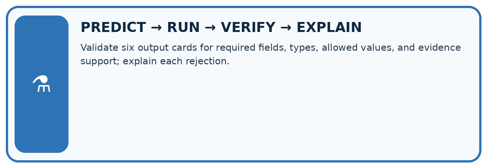
Validate six output cards for required fields, types, allowed values, and evidence support; explain each rejection.
| Test / input | Prediction | Actual | Evidence / calculation | Change or keep? |
|---|---|---|---|---|
| normal | ||||
| boundary | ||||
| missing | ||||
| fresh transfer |
What did the hardest test teach you that the normal test did not?
Plan → try → check
Before trying: what do I expect, and why? While trying: which step could first go wrong? Afterwards: what did I actually observe, and what should change? Keep “not run” if you only traced the procedure.
Student lesson · 10 of 17
Build your understanding
MASTERY
From Knowing the Word to Owning the Idea
Move upward only when you can produce evidence without copying the worked example.

1 • NAME: Define the concept without repeating the textbook.
2 • TRACE: Show the information, state, branch, calculation, or evidence path.
3 • APPLY: Solve a different example independently.
4 • CHALLENGE: Find a boundary case, counterexample, or unfair outcome.
5 • EXPLAIN LIMITS: Say when the result should not be trusted or used alone.
My strongest evidence of independent understanding:
Student lesson · 11 of 17
Connect your project
CUMULATIVE PROJECT
Verified Study Buddy
Every week adds one inspectable piece. The system must show how it reached a result.
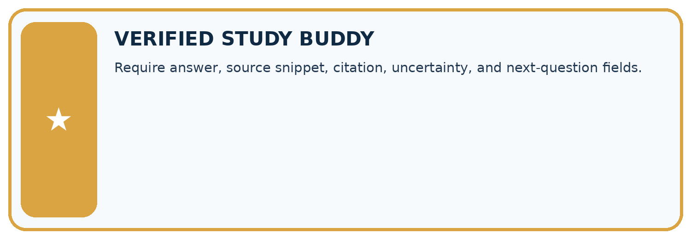
THIS WEEK’S CHECKPOINT Require answer, source snippet, citation, uncertainty, and next-question fields.
SYSTEM MAP Learner need → prompt/schema → approved sources/retrieval → model/tool → structured answer → verification → human decision
What will you add, change, or verify in the project this week?
What should remain under human control?
RESPONSIBLE DESIGN Collect only necessary information. Show uncertainty and limits. Never confuse fluent output with verified truth.
Evidence for your project
Validate Study Buddy outputs before another program consumes them; retain source IDs and separate syntax/type/support failures.
Student lesson · 12 of 17
Show what you know
INDEPENDENT MASTERY PROOF
Explain • Transfer • Test • Defend
Complete this page without copying the worked example. Your reasoning matters more than decoration.
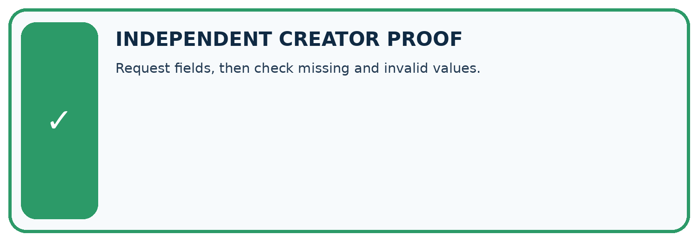
CHALLENGE Request fields, then check missing and invalid values.
1. My fresh example, trace, calculation, or design:
2. My evidence that it works (include a boundary or missing-data case):
3. One limitation, fairness concern, or situation needing human review:
SELF-CHECK □ I explained the mechanism □ I used evidence □ I tested a fresh case □ I named a limitation □ I can answer ‘why?’
Student lesson · 13 of 17
Study a complete case
Week 8 Worked case
Use the supplied details to practise the weekly concept before attempting the independent question. This case extends the illustrated lesson.
The situation
Schema requires title text and pages number. Output is {"title":"River","pages":"80"}.
The question
Diagnose the shape error.
Worked explanation
Pages is a string, not a number. Use numeric 80. Structure validation does not verify the real page count.
Explain it in your own words
Which detail supports the answer, and why does it matter?
Trace the supplied case visually
Type correctness is not factual correctness
| Evidence or stage | Value or result |
|---|---|
| Wrong type | pages = "80" is text |
| Correct type | pages = 80 is numeric |
| Remaining check | Verify the real page count |
Schema requires title text and pages number. Output is {"title":"River","pages":"80"}.
Diagnose the shape error.
Pages is a string, not a number. Use numeric 80. Structure validation does not verify the real page count.
Student lesson · 14 of 17
Try a new case independently
Independent case: Validate new objects independently
Sources A approve room F and B register F capacity 9. Object X has supported,F,9,[A,B] with exactly the required fields. Y replaces 9 with "9". Z keeps integer 9 but names room G. Trace the first failing layer for each and explain the difference.
Attempt this case before feedback. Record any help. Earlier examples below are further practice; a case already practised with feedback cannot establish fresh transfer.
Week 8 Independent application
Close the worked explanation. Apply the idea to this different question without copying.
A required schema has title as text and count as an integer. The output is {"title":"Seeds","count":"three"}. Identify the error and give a valid replacement.
My answer, with a trace, calculation or supporting evidence
Create and test
Change one relevant detail. Predict the result before testing. Include a boundary or missing-information case when it helps reveal a limit.
My changed input and expected result
Connect to your project
Require answer, source snippet, citation, uncertainty, and next-question fields.
The evidence I will keep
Your teacher has the independent answer and scoring criteria. Complete the matching workbook week to keep your practice evidence together.
Transfer practice from the original programme
Schema requires title:text and pages:number. Output is {"title":"Cloud","pages":"80"}. Fix its structural error. Would the repaired object prove the book really has 80 pages?
Use feedback to improve
Attempt the independent case before hints. Record whether you worked alone, used a hint or followed a model. After feedback, fix the first unsupported step and explain why it changed. A later check uses a changed case, not a copied answer.
Student lesson · 15 of 17
Your lesson route
Start with this question: A fictional Study Buddy returns a machine-readable book fact.
| By the end, I can | How I will show it |
|---|---|
| Separate JSON parsing, schema validation and source support checks | Explain the deciding step, show a trace or test, and state one limit. |
| Reject invalid types and unexpected fields under a closed schema | Explain the deciding step, show a trace or test, and state one limit. |
| Trace a validly formatted but unsupported claim | Explain the deciding step, show a trace or test, and state one limit. |
Remember → watch and explain → try with help → investigate → try independently → keep project evidence. Your teacher may spread this lesson across several classes.
Keep your first prediction. Compare it with what the evidence shows and explain any change.
Student lesson · 16 of 17
Finish and return
Close your notes. Explain this goal in your own words: Separate JSON parsing, schema validation and source support checks
If you are unsure, return to the worked picture and explain one arrow. If you are ready, change an input or assumption and justify your prediction.
Save your workbook evidence. At the next review, try a different case before opening your old answer.
Student lesson · 17 of 17
Supported practice, repair and portfolio
Use this supported practice once, in the browser or on paper. Keep the reserved independent assessment for a separate first attempt before teacher feedback.
A fictional Study Buddy returns a machine-readable book fact.
Practice 1: explain the deciding evidence
Which labelled step matches this detail? X passes syntax, declared schema and source comparison.
1. Meaning check
2. Accept X
3. Schema check
4. Parse
Hint if needed: Read the steps in the pictorial case. Match the supplied detail to the stage that performs or records it.
After your attempt, compare with the supported explanation: Accept X X passes syntax, declared schema and source comparison. Parsing establishes that text forms a structured object. Schema checks establish required fields and types. Semantic validation compares their meaning with the approved source. These are different layers: a parseable, well-shaped object can still contain a false fact. Report the first failing layer without treating format success as factual success.
Practice 2: explain the deciding evidence
Changed-case practice: Add an extra field "rating":5 to X under the exactly-fields schema. Which conclusion is supported by the supplied facts?
1. This one example guarantees correct results for every future input.
2. The changed object fails schema despite keeping the correct page count.
3. We can decide the result without examining the changed input or the procedure.
Hint if needed: Use the changed condition and the deciding step in the pictorial trace. The answer must say what follows from those facts.
After your attempt, compare with the supported explanation: The changed object fails schema despite keeping the correct page count. Exactly means additional fields are not allowed in this contract.
Repair a missing building block
Review Iterative Prompting (ai-3/7). Goal: Explain the mechanism and terminology of controlled prompt experiments. Short practice: What evidence supports improvement here, and what remains unproven?. Return to this week and explain what you changed.
Review Prompt as a Contract (ai-3/5). Goal: Write a prompt specification with observable response criteria. Short practice: Why should the tool not fill melting from memory even if it knows a common definition?. Return to this week and explain what you changed.
Review A Distribution of Possibilities (ai-3/2). Goal: Check whether a next-token table is a valid probability distribution. Short practice: Why is 0.625 not a broken probability sum?. Return to this week and explain what you changed.
Keep your completed work
Use Download completed work in the hosted lesson to export your answers, reflections, practice feedback and code-run evidence. Open the HTML copy to read or print it. Drafts stay in this browser when storage is available; clear drafts on a shared device.